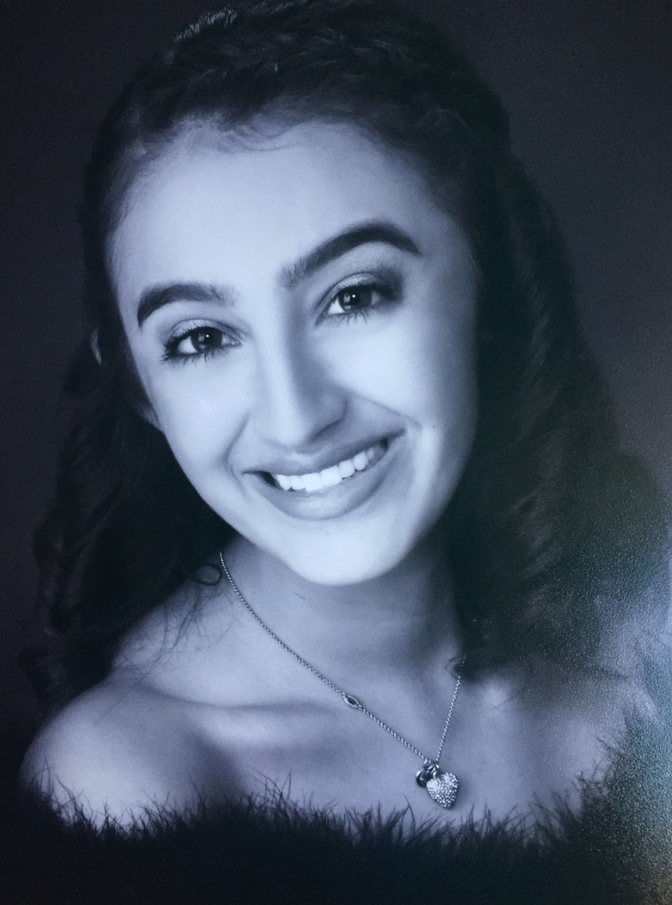

MEET JACKIE
Jackeline Urbina is the founder and creative director behind, Atelier Jackeline.
With a background in Real Estate and Construction, her love to create beautiful and unique spaces came
from a young age. Growing up she witnessed first hand how the design and functionality of a space affected individuals psychologically and also took a toll on the entire energy of the room.
Passionate about helping individuals live in a space fit for their lifestyle and needs, she prides herself in prioritizing sustainable, durable, and glamourous finishes. She will be
graduating from California State University, Northridge, located in Northridge, California, with her Bachelor’s in Family and Consumer Sciences with
an emphasis in Interior Design in December 2020.
She currently resides in Los Angeles, CA with her Maltese Frise, Bambino.